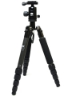
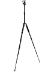
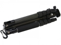

器材库 > 脚架 > T-025X+C-10X

详细规格
发布日期
2013-05-08
厂家推荐价格
35,700.00 （日元）
产品类型
三脚架
材质
碳纤维
节数
5
最大管径
22mm
最小管径
10mm
折合高度
345mm
最高工作高度
1390mm / 不升中轴：1210mm
最低工作高度
190mm
最大负重
6kg
自重
0.9kg
云台
C-10X
该产品暂无存档的网友点评
产品图 / 样片




